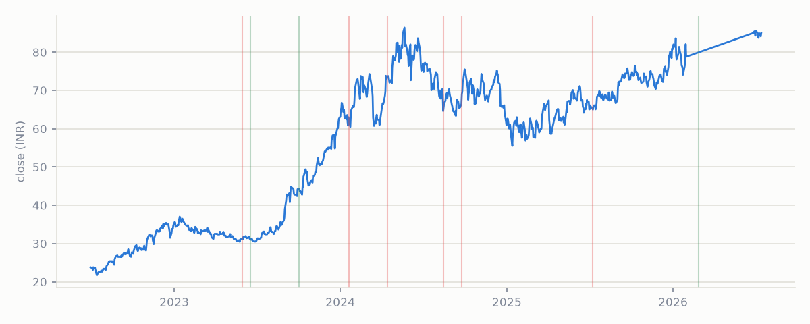

| Date | Direction | Intensity | Novelty |
|---|---|---|---|
| 2026-02-26 | + tone | 89.7th pct | 233 |
| 2025-07-08 | − tone | 87.2th pct | 287 |
| 2024-09-24 | − tone | 29.3th pct | 41 |
| 2024-08-14 | − tone | 48.3th pct | 123 |
| 2024-04-13 | − tone | 82.2th pct | 84 |
| 2024-01-20 | − tone | 50.4th pct | 110 |
| 2023-10-02 | + tone | 61.6th pct | 106 |
| 2023-06-18 | + tone | 30.6th pct | 19 |
| 2023-05-30 | − tone | 18.6th pct | first seen |